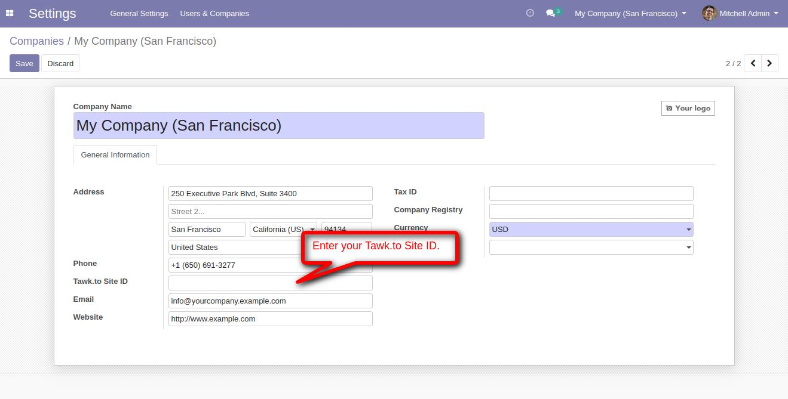
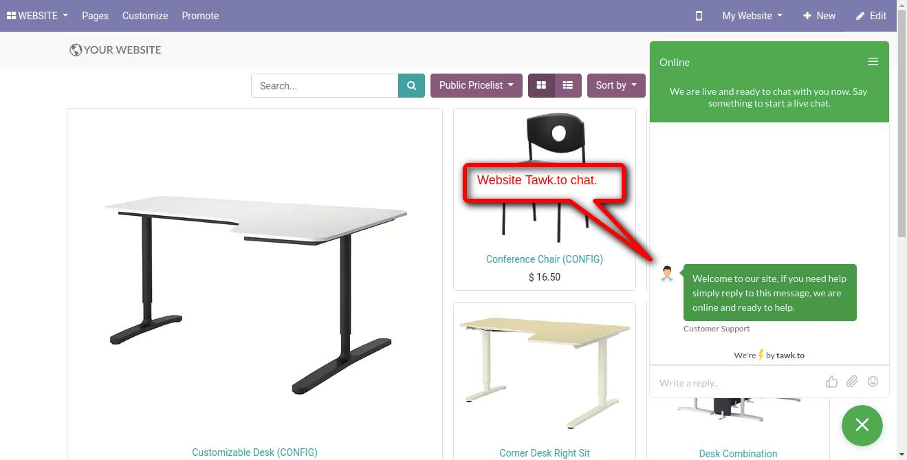

<section class="container">
    <div class="row">
        <div class="col-sm-12">
            <h2 class="oe_slogan">Website Add Tawk.to</h2>
            <h3 class="oe_slogan">Allows you to add Tawk.to in your Odoo website</h3>
        </div>
    </div>
    <div class='oe_span12'>
       1. Enter your Tawk.to id.
    </div>
    <div class='oe_span12'>
        
    </div>
        <div class='oe_span12'>
       2. Tawk.to in odoo website.
    </div>
    <div class='oe_span12'>
        
    </div>
    <div class='oe_span12'>
        <div class="oe_centeralign oe_mt32 oe_mb32">
            <a href="https://apps.odoo.com/apps/modules/browse?search=erpmstar" class="oe_button oe_big oe_tacky">Our Other Apps</a>
        </div>
    </div>
    <div class='oe_span12'>
        <h1 align="center">
           If You Need Any Help Please Contact
        </h1>
        <h3 align="center">
            Email Id: erpmstra@gmail.com
        </h3>
    </div>
    </div>
</section>